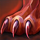
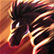

4. Selecciona 2 habilidades para tu personaje...
Grito Salvaje
Druida gana 1 movimiento extra por (2d6) turnos
 Garra de Oso
Transformación a Oso
Ayuda Inesperada
Druida gana confianza inmediata de animal salvaje. Puede usarse libremente 1 vez al día
Alas al Viento
Transformación a Águila
 Fuerza Primal
Druida y aliados hasta 5 espacios de distancia ganan 2 movimientos extras por (1d8) turnos